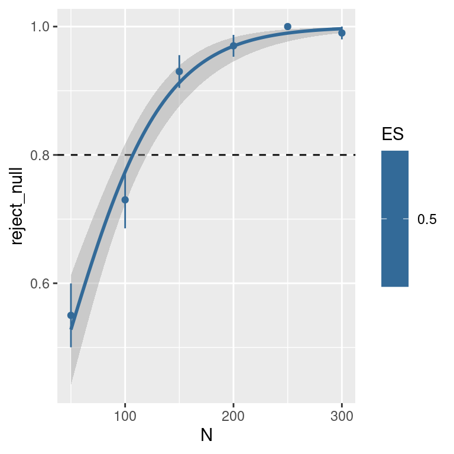
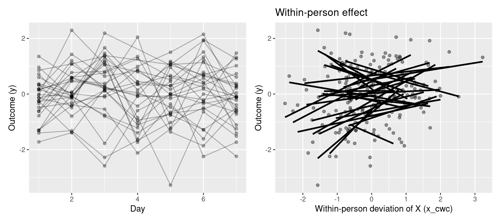

Activity 1 — GLMM analysis of a delayed discounting study
In this activity, we simulate data from a delayed discounting task, a commonly used paradigm to study impulsive decision-making. On each trial, participants choose between:
a smaller reward available immediately, and
a larger reward available after a delay.
Across trials, the amounts of the immediate and delayed rewards are systematically varied. This allows us to estimate a psychometric choice function describing how the probability of choosing the delayed reward changes as the difference between delayed and immediate rewards increases.
Two key features of behaviour in this task are:
Bias (or PSE, point of subjective equality):
the reward difference at which a participant is equally likely to choose the immediate or delayed option. Lower PSE values indicate greater impulsivity (a stronger preference for immediate rewards).
Slope:
how sharply choices switch from preferring the immediate to the delayed option as the reward difference increases. Shallower slopes indicate noisier or less consistent preferences.
Delayed discounting tasks are used to study impulsivity and reward processing. Dopaminergic medication (such as L-DOPA or dopamine agonists) has been linked to changes in impulsivity and reward sensitivity and some studies suggest that dopaminergic treatment can increase impulsive choice in certain patients.
In this example, we simulate two groups (e.g. patients on vs off medication, or patients vs controls), assuming a small group difference in the underlying decision parameters. We model behaviour at the level of latent psychometric parameters and use simulation to explore how sample size and other parameters affect statistical power.
Task design
We can fix the set of choices offered in the task; I am using in particular a design that has been used in prior studies, which aims to provide a targeted sampling of possible choice pairs (combinations of immediate and delayed rewards) in a way that should encompass a broad range of individual differences in discounting.
Here is the function used to simulate the data. A few things to notice here:
Random variation operates at multiple levels.
We sample random quantities at two distinct levels:
participant-level parameters that capture individual differences (e.g. bias and slope), drawn from a multivariate normal distribution, and
trial-level choices, generated from a Bernoulli (binomial) distribution given those parameters.
This hierarchical structure—multiple sources of variability at different levels—is precisely why models for these data are referred to as multilevel models. At the participant level, we allow the bias and variability parameters to be correlated, reflecting realistic individual differences in decision-making.
Defining effect sizes in a GLMM.
In this example, we define the effect size in terms of variability on the latent (PSE) scale, aiming to approximate what a Cohen’s \(d\) would represent if PSEs were estimated for each participant and compared across groups. To do this, we need to account for both sources of variability on the PSE scale:
between-participant variability in true PSEs, and
variability due to the stochastic choice process (logistic noise), which depends on the slope of the psychometric function.
Under a logistic choice model with slope \(\beta\), the latent noise corresponds to a logistic distribution with standard deviation \((\pi/\sqrt{3}) / \beta\) when expressed on the PSE (difference) scale. We therefore approximate the total latent variability as: \[\text{SD}_{\text{total}} \;\approx\;
\sqrt{
\text{SD}_{\text{PSE}}^2
\;+\;
\left(\frac{\pi}{\sqrt{3}\,\beta}\right)^2
}.\]
The group difference in PSE implied by the standardised effect size is then defined as: \[\Delta_{\text{PSE}} = d \times \text{SD}_{\text{total}}.\]
This provides a reasonable approximation to Cohen’s \(d\) that reflects all sources of variability on the latent PSE scale, so that the standardised effect size interpretation is as close as possible to a Cohen’s \(d\) (although note that this should be considered an approximate analogue of Cohen’s \(d\), rather than an exact equivalence).
Code
simulate_dd <-function(n_per_group =30,groups =c("CL", "PD"),# -population-level parameters (baseline group) mu_pse =12.5, # mean point of subjective equality (bias)mu_slope =0.3, # mean slope of psychometric functionsd_pse =3.0, # between-subject SD of PSEsd_slope =0.1, # between-subject SD of sloperho =-0.3, # correlation between PSE and slope# -group effect (small effect, approx d = 0.2) d_effect =0.5, # conceptually similar to Cohen's dseed =NULL){if (!is.null(seed)) set.seed(seed)# we scale the effect size according to total # latent variability (between subject SD + logistic noise) delta <- d_effect *sqrt(sd_pse^2+ ((pi/sqrt(3))/mu_slope)^2)# -covariance matrix for (PSE, slope) Sigma <-matrix(c(sd_pse^2, rho * sd_pse * sd_slope, rho * sd_pse * sd_slope, sd_slope^2),nrow =2, byrow =TRUE ) dat <-list() row_i <-1for (g in groups) {# group-specific mean shift mu_shift_pse <-ifelse(g != groups[1], delta, 0) mu_vec <-c(mu_pse + mu_shift_pse, mu_slope)# -sample subject-level parameters theta <- MASS::mvrnorm(n_per_group, mu = mu_vec, Sigma = Sigma)colnames(theta) <-c("pse", "slope")for (s in1:n_per_group) {# here set the experimental design d_i <- design_dd diff <- d_i$delayed - d_i$immediate# psychometric (logistic) choice function p_delayed <-1/ (1+exp(-theta[s, "slope"] * (diff - theta[s, "pse"]))) choice <-rbinom(nrow(d_i), size =1, prob = p_delayed) dat[[row_i]] <- d_i %>%mutate(choose_delayed = choice,p_delayed = p_delayed,subjectID =paste0(g, "_", s),group = g,pse = theta[s, "pse"],slope = theta[s, "slope"] ) row_i <- row_i +1 } }bind_rows(dat)}
Example usage:
Code
d <-simulate_dd(n_per_group =10, d_effect=0.5)str(d)
# function for binomial standard error (normal approximation)binomSEM <-function (v) sqrt((mean(v) * (1-mean(v)))/length(v))# plotd %>%mutate(diff= delayed-immediate) %>%group_by(diff,subjectID, group) %>%summarise(choose_delayed =mean(choose_delayed),se =binomSEM(choose_delayed)) %>%ggplot(aes(x=diff, y=choose_delayed, ymin=choose_delayed-se, ymax=choose_delayed+se, color=group)) +geom_errorbar(width=0)+facet_wrap(.~subjectID, ncol=5)+geom_point()
Code: fit model and extract statistics
We can wrap the model-fitting code in a custom function for convenience
Code
fit_dd_glmer <-function(dat) {# model: interaction + random slope dat$diff <- dat$delayed - dat$immediate dat$group <-ifelse(dat$group=="PD",1,0) fit <- lme4::glmer(choose_delayed ~ group * diff + (1+ diff | subjectID),data = dat,family =binomial(link ="logit"))# extract Wald tests from model summary coefs <-summary(fit)$coefficients out <- coefs[rownames(coefs)=="group",]names(out) <-c("estimate", "se", "z", "p")# add other info out <-as.data.frame(t(out), stringsAsFactors =FALSE) out$N <-length(unique(dat$subjectID))# add effect on the PSE scale slope_CL <- coefs[rownames(coefs)=="diff",1] slope_PD <- slope_CL + coefs[rownames(coefs)=="group:diff",1] PSE_CL <-- coefs[rownames(coefs)=="(Intercept)",1] / slope_CL PSE_PD <-- (coefs[rownames(coefs)=="(Intercept)",1]+coefs[rownames(coefs)=="group",1]) / slope_PD out$delta_PSE <- PSE_PD - PSE_CLreturn(out)}
Example usage:
Code
fit_dd_glmer(simulate_dd(n_per_group =20))
estimate se z p N delta_PSE
1 -1.573065 0.000990617 -1587.965 0 40 4.254466
Code: power simulation
We now have all the pieces that we need to estimate power by iteratively simulating the experiment with varying sample size or effect sizes.
Code
n_sim <-100n_participants <-seq(25, 150, by=25)# this bit if you want a progress bartotal_runs <-length(n_participants) * n_simpb <-txtProgressBar(min =0, max = total_runs, style =3)run_counter <-0# iterate over sample sizessim_res <- {}for(n in n_participants){for(i in1:n_sim){ sim_i <-sim_fit_dd_glmer(simulate_dd(n_per_group = n)) # store output sim_i$n_per_group <- n sim_i$sim <- i sim_res <-rbind(sim_res, sim_i) }}
# check which simulations rejected the nullsim_res <- sim_res %>%mutate(reject_null =ifelse(p <0.05, 1, 0))# make plotsim_res %>%group_by(N, ES) %>%summarise(power =mean(reject_null),se =binomSEM(reject_null)) %>%ggplot(aes(x=N, y=power, color=ES)) +geom_hline(yintercept=0.8, lty=2)+stat_smooth(data=sim_res, # logistic function to summarise power curvemapping=aes(y=reject_null), method="glm", method.args =list(family=binomial(link="logit"))) +geom_point()+geom_errorbar(aes(ymin = power - se,ymax = power + se),width=0)

Optional: Speeding up simulations with parallel computing
This type of computations are sometimes described as “embarrassingly parallel” as it can be split into many independent tasks that run simultaneously with no communication needed between them. It can be significantly speeded up by running for example simulations for different sample sizes on separate cores in a cluster or multicore PC. In R this is easily done with the parallel library.
Parallel code implementation:
Code
library(parallel)# Set up parallel processingn_cores <-8cl <-makeCluster(n_cores)# Load required libraries on each workerclusterEvalQ(cl, {library(tidyverse)library(lme4)})# Export necessary functions and objects to the clusterclusterExport(cl, c("fit_dd_glmer", "simulate_dd", "n_sim", "design_dd"))# Create a function that runs simulations for a single sample sizerun_sim_for_n <-function(n) { results <-list()for(i in1:n_sim) { sim_i <-fit_dd_glmer(simulate_dd(n_per_group = n,d_effect =0.5)) sim_i$n_per_group <- n sim_i$sim <- i sim_i$ES <-0.5 results[[i]] <- sim_i }do.call(rbind, results)}# Run simulations in parallel across sample sizessim_res_list <-parLapply(cl, n_participants, run_sim_for_n)# Stop the clusterstopCluster(cl)# Combine all resultssim_res <-do.call(rbind, sim_res_list)
Further task
Modify the simulation code to explore multiple effect sizes and/or different numbers of trials per participant. Examine how increasing the number of participants compares to increasing the number of trials per participant in terms of statistical power.
Activity 2 — LMM analysis of an experience sampling study
In this activity, we simulate data from an experience sampling (or daily diary) study in which the same participants are measured repeatedly over several days. We then use a multilevel (mixed-effects) model to analyse the data and estimate statistical power for key effects of interest. We can set up our simulations to account for missing observations, or autocorrelation in the predictor.
Between-person and within-person effects
A central feature of experience sampling data is that observations are nested within people. This means that a predictor can vary in two distinct ways:
Between people: some participants tend to score higher than others on average.
Within a person: a given participant fluctuates around their own average from day to day.
These two sources of variation often have different psychological meanings and should be analysed separately.
To do this, we decompose the predictor \(X\) into two components:
Between-person component (x_bar):
each participant’s average level of \(X\) across days.
Within-person component (x_cwc):
the day-to-day deviation from that participant’s own mean
(often called cluster-mean centering or person-mean centering).
In the multilevel model, this leads to two separate effects:
The between-person effect (beta_b):
Do people who are higher on average on \(X\) also tend to have higher values of the outcome \(Y\)?
The within-person effect (beta_w):
On days when a person is higher than their own average on \(X\), do they also tend to show higher values of \(Y\)?
Importantly, these effects need not be the same in size, or even in direction. Treating them separately avoids conflating differences between people with changes within a person over time.
In this simulation, both components are standardised separately. This means that effect sizes such as beta_w = 0.20 should be interpreted as: > a 0.20 SD change in the outcome for a 1 SD change in the corresponding component of the predictor.
This is convenient for setting plausible effect sizes based on common “small / medium / large” conventions.
Temporal dependence and the AR(1) process
In many experience sampling studies, measurements taken close together in time are more similar than measurements taken further apart. For example, how someone feels today is likely to be related to how they felt yesterday. This is known as temporal autocorrelation.
In this activity, we model temporal dependence in the within-person deviations of the predictor using an AR(1) process (autoregressive process of order 1).
An AR(1) process assumes that each value depends partly on the previous value plus some new random fluctuation:
\[ \text{out}_t = r \cdot \text{out}_{t-1} + \text{innovation}_t \]
where: - \(r\) is the autocorrelation parameter (between −1 and 1), - \(\text{innovation}_t\) is new random noise at time \(t\).
If \(r = 0\), observations are independent over time.
If \(r > 0\), consecutive observations tend to be similar (“sticky” over time).
We want the simulated time series to have a stable (stationary) variance over time. For a stationary AR(1) process, the variance of the series satisfies:
This equation reflects the fact that: - part of the variance comes from carrying over the previous value (\(r^2 \, \mathrm{Var}(\text{out})\)), - part comes from new random input (\(\mathrm{Var}(\text{innovation})\)).
This shows that stronger autocorrelation (larger \(r\)) increases the overall variability of the time series for a given amount of noise.
In the simulation, we want the AR(1) process to have a target standard deviation\(s\) (e.g., the within-person SD of the predictor). To achieve this, we set the innovation variance so that:
\[ \mathrm{SD}(\text{innovation}) = s \sqrt{1 - r^2} \]
This ensures that, regardless of the value of \(r\), the simulated within-person deviations have the desired overall variability.
Note that here we include autocorrelation in the predictor but assume that residual errors in the outcome are independent. This keeps the fitted multilevel model correctly specified, while still allowing temporal structure in the data-generating process. It is possible to relax this assumption, but then the model (as it is formulated now, using the lme4 library) would be miss-specified. This can be OK (perhaps we want to check the effect of model misspecification on power or on false-positive rate). To fit a model that explicitly allows for residual autocorrelation we need a different package (see ?corAR1 in the nlme package).
Code: data simulation
For this example we need these packages:
Code
library(lme4)library(lmerTest)library(tidyverse)library(MASS) # for mvrnorm()
We first define a custom function for the AR(1) process, to simulate a vector of size n with a set variance s and autocorrelation r.
Code
r_ar1 <-function(n, s, r){ innov_sd <- s *sqrt(1- r^2) innov <-rnorm(n, mean =0, sd = innov_sd) out <-numeric(n) out[1] <-rnorm(1, mean =0, sd = s)for (t in2:n) { out[t] <- r * out[t -1] + innov[t] } out}
The actual data-simulation function:
Code
sim_diary <-function(n_child =50,n_days =7,# Predictor X structuresd_between_x =0.6, # SD of each child's mean X across children (between-person variability)sd_within_x =0.8, # SD of day-to-day deviations within a child (within-person variability)rho_x_ar1 =0.2, # AR(1) correlation in within-person deviations of X across consecutive days# Outcome Y structurebeta0 =0, # interceptbeta_w =0.20, # within-person effect of x_cwc on Y (in SD units of x_cwc)beta_b =0.20, # between-person effect of x_bar on Y (in SD units of x_bar)tau0 =0.60, # SD of random interceptstau1 =0.15, # SD of random slopes for x_cwcrho_u =0.0, # correlation between intercept and slope random effectssigma_e =0.80, # residual SD (day-level noise), assumed independent over daysweekday_fx =FALSE, # include weekday fixed effects in the fitted model?# Missingness (day-level MCAR)mcar_rate =0.05, # probability any given day is missing (independent of everything)seed =NULL){if (!is.null(seed)) set.seed(seed)# Random effects covariance matrix for (u0, u1) Sigma_u <-matrix(c(tau0^2, rho_u * tau0 * tau1, rho_u * tau0 * tau1, tau1^2),nrow =2, byrow =TRUE )# Balanced panel: each child measured each day df <-expand.grid(id =1:n_child, day =1:n_days) %>%as_tibble() %>%arrange(id, day) %>%mutate(weekday =factor((day -1) %%7,labels =c("Mon","Tue","Wed","Thu","Fri","Sat","Sun")) )# Person-level mean of X (between-person differences) x_bar <-rnorm(n_child, mean =0, sd = sd_between_x) df <- df %>%left_join(tibble(id =1:n_child, x_bar = x_bar), by ="id")# Within-person daily deviations of X with AR(1) structure df <- df %>%group_by(id) %>%mutate(x_within =r_ar1(n_days, sd_within_x, rho_x_ar1)) %>%ungroup() %>%mutate(x = x_bar + x_within,x_cwc = x - x_bar )# Standardise predictors separately # IMPORTANT: beta_w and beta_b are interpreted in SD units of each component (x_cwc and x_bar). df <- df %>%mutate(x =as.numeric(scale(x)),x_bar =as.numeric(scale(x_bar)),x_cwc =as.numeric(scale(x_cwc)) )# Random effects per child (random intercept + random slope for x_cwc) RE <- MASS::mvrnorm(n_child, mu =c(0, 0), Sigma = Sigma_u) RE <-tibble(id =1:n_child, u0 = RE[,1], u1 = RE[,2]) df <- df %>%left_join(RE, by ="id")# Day-level residuals e (independent across days) # This keeps the fitted lmer() model correctly specified w.r.t. residual correlation. df <- df %>%mutate(e =rnorm(nrow(df), mean =0, sd = sigma_e))# True weekday effect (set to zero here; weekday_fx just changes the fitted model) df <- df %>%mutate(weekday_eff =0)# Outcome generation df <- df %>%mutate(y = beta0 + u0 + (beta_w + u1) * x_cwc + beta_b * x_bar + weekday_eff + e )# Optional: standardise outcome df <- df %>%mutate(y =as.numeric(scale(y)))# Missingness: day-level MCAR only ---if (mcar_rate >0) { keep <-runif(nrow(df)) >= mcar_rate df <- df[keep, ] } df}
Visualisation is a good approach to check that the simuated data is sensible
Code
library(patchwork)# simulate datadat <-sim_diary(n_child =30, n_days =7)# plot trajectoriesp_trajectories <-ggplot(dat, aes(x = day, y = y, group = id)) +geom_line(alpha =0.3) +geom_point(alpha =0.3) +labs(x ="Day",y ="Outcome (y)" )# plot within-person association p_within <-ggplot(dat, aes(x = x_cwc, y = y, group = id)) +geom_point(alpha =0.4) +geom_smooth(method ="lm", se =FALSE, color ="black") +labs(x ="Within-person deviation of X (x_cwc)",y ="Outcome (y)",title ="Within-person effect" ) # combine using patchwork libraryp_trajectories + p_within

Code: fit model and extract statistics
It is convenient to wrap the code for fitting the model and extracting the statistic of interest in a custom function.
We can finally put it all together in a function that iteratively simulate a number of datasets, fit the model on each simulated dataset, and then compute the power as the fraction of significant simulations
Extend the code above to explore how different design choices affect statistical power in experience sampling studies.
In particular:
Complete the analysis by writing a loop that evaluates power across increasing numbers of participants.
As robustness checks, modify the simulation to also vary:
the autocorrelation in the predictor (rho_x_ar1), and
the number of days in the diary study (n_days).
the rate of missing observations (mcar_rate).
Use these simulations to compare how increasing the number of participants versus increasing the number of repeated measurements per participant contributes to statistical power, and whether this differs for within-person effects (beta_w) and between-person effects (beta_b).
As a final challenge, modify the data-simulation code to include attrition, such that some participants begin the study but drop out partway through and provide no further observations. Explore how attrition (and its timing) impacts statistical power, and whether its effects differ from those of randomly missing observations.
Source Code
---title: "Using simulations for power analyses and sample size planning<br> Worksheet"author: "Matteo Lisi"format: html: toc: true code-tools: true # run/copy buttons code-fold: showexecute: echo: true warning: false message: false---```{r, echo=FALSE, message=FALSE}library(tidyverse)library(rstan)library(lme4)```## Activity 1 — GLMM analysis of a delayed discounting studyIn this activity, we simulate data from a **delayed discounting task**, a commonly used paradigm to study impulsive decision-making. On each trial, participants choose between:- a **smaller reward available immediately**, and - a **larger reward available after a delay**.Across trials, the amounts of the immediate and delayed rewards are systematically varied. This allows us to estimate a *psychometric choice function* describing how the probability of choosing the delayed reward changes as the difference between delayed and immediate rewards increases.Two key features of behaviour in this task are:- **Bias (or PSE, point of subjective equality):** the reward difference at which a participant is equally likely to choose the immediate or delayed option. Lower PSE values indicate greater impulsivity (a stronger preference for immediate rewards).- **Slope:** how sharply choices switch from preferring the immediate to the delayed option as the reward difference increases. Shallower slopes indicate noisier or less consistent preferences.Delayed discounting tasks are used to study impulsivity and reward processing. Dopaminergic medication (such as L-DOPA or dopamine agonists) has been linked to changes in impulsivity and reward sensitivity and some studies suggest that dopaminergic treatment can increase impulsive choice in certain patients.In this example, we simulate two groups (e.g. patients *on* vs *off* medication, or patients vs controls), assuming a small group difference in the underlying decision parameters. We model behaviour at the level of latent psychometric parameters and use simulation to explore how sample size and other parameters affect statistical power.### Task designWe can fix the set of choices offered in the task; I am using in particular a design that has been used in prior studies, which aims to provide a targeted sampling of possible choice pairs (combinations of immediate and delayed rewards) in a way that should encompass a broad range of individual differences in discounting.```{r}immediate <-c(rep(10, 15),13:27,rep(20, 15),seq(16, 44, length.out =15))delayed <-c(11:25,rep(30, 15),24:38,rep(45, 15))design_dd <-data.frame(trial =1:length(immediate),immediate = immediate,delayed = delayed)```We can visualise this with a scatterplot```{r}#| fig.align: 'center'#| fig.height: 4#| fig.width: 4.5plot(design_dd$immediate, design_dd$delayed, pch=19, col="blue",xlab="immediate reward [£]", ylab="delayed reward [£]")abline(a=0,b=1, lty=2) # identity line```### Code: data simulationHere is the function used to simulate the data. A few things to notice here:- **Random variation operates at multiple levels.** We sample random quantities at two distinct levels: (i) *participant-level parameters* that capture individual differences (e.g. bias and slope), drawn from a **multivariate normal distribution**, and (ii) *trial-level choices*, generated from a **Bernoulli (binomial) distribution** given those parameters. This hierarchical structure—multiple sources of variability at different levels—is precisely why models for these data are referred to as *multilevel* models. At the participant level, we allow the bias and variability parameters to be correlated, reflecting realistic individual differences in decision-making.- **Defining effect sizes in a GLMM.** In this example, we define the effect size in terms of variability on the *latent (PSE) scale*, aiming to approximate what a Cohen’s $d$ would represent if PSEs were estimated for each participant and compared across groups. To do this, we need to account for *both* sources of variability on the PSE scale: - between-participant variability in *true* PSEs, and - variability due to the stochastic choice process (logistic noise), which depends on the slope of the psychometric function. Under a logistic choice model with slope $\beta$, the latent noise corresponds to a logistic distribution with standard deviation $(\pi/\sqrt{3}) / \beta$ when expressed on the PSE (difference) scale. We therefore approximate the *total* latent variability as: $$\text{SD}_{\text{total}} \;\approx\; \sqrt{ \text{SD}_{\text{PSE}}^2 \;+\; \left(\frac{\pi}{\sqrt{3}\,\beta}\right)^2 }.$$ The group difference in PSE implied by the standardised effect size is then defined as: $$\Delta_{\text{PSE}} = d \times \text{SD}_{\text{total}}.$$ This provides a reasonable approximation to Cohen’s $d$ that reflects all sources of variability on the latent PSE scale, so that the standardised effect size interpretation is as close as possible to a Cohen’s $d$ (although note that this should be considered an approximate analogue of Cohen’s $d$, rather than an exact equivalence).```{r}simulate_dd <-function(n_per_group =30,groups =c("CL", "PD"),# -population-level parameters (baseline group) mu_pse =12.5, # mean point of subjective equality (bias)mu_slope =0.3, # mean slope of psychometric functionsd_pse =3.0, # between-subject SD of PSEsd_slope =0.1, # between-subject SD of sloperho =-0.3, # correlation between PSE and slope# -group effect (small effect, approx d = 0.2) d_effect =0.5, # conceptually similar to Cohen's dseed =NULL){if (!is.null(seed)) set.seed(seed)# we scale the effect size according to total # latent variability (between subject SD + logistic noise) delta <- d_effect *sqrt(sd_pse^2+ ((pi/sqrt(3))/mu_slope)^2)# -covariance matrix for (PSE, slope) Sigma <-matrix(c(sd_pse^2, rho * sd_pse * sd_slope, rho * sd_pse * sd_slope, sd_slope^2),nrow =2, byrow =TRUE ) dat <-list() row_i <-1for (g in groups) {# group-specific mean shift mu_shift_pse <-ifelse(g != groups[1], delta, 0) mu_vec <-c(mu_pse + mu_shift_pse, mu_slope)# -sample subject-level parameters theta <- MASS::mvrnorm(n_per_group, mu = mu_vec, Sigma = Sigma)colnames(theta) <-c("pse", "slope")for (s in1:n_per_group) {# here set the experimental design d_i <- design_dd diff <- d_i$delayed - d_i$immediate# psychometric (logistic) choice function p_delayed <-1/ (1+exp(-theta[s, "slope"] * (diff - theta[s, "pse"]))) choice <-rbinom(nrow(d_i), size =1, prob = p_delayed) dat[[row_i]] <- d_i %>%mutate(choose_delayed = choice,p_delayed = p_delayed,subjectID =paste0(g, "_", s),group = g,pse = theta[s, "pse"],slope = theta[s, "slope"] ) row_i <- row_i +1 } }bind_rows(dat)}```Example usage:```{r}d <-simulate_dd(n_per_group =10, d_effect=0.5)str(d)```We can visualise the simulated data:```{r}#| fig.align: 'center'#| fig.height: 10#| fig.width: 10# function for binomial standard error (normal approximation)binomSEM <-function (v) sqrt((mean(v) * (1-mean(v)))/length(v))# plotd %>%mutate(diff= delayed-immediate) %>%group_by(diff,subjectID, group) %>%summarise(choose_delayed =mean(choose_delayed),se =binomSEM(choose_delayed)) %>%ggplot(aes(x=diff, y=choose_delayed, ymin=choose_delayed-se, ymax=choose_delayed+se, color=group)) +geom_errorbar(width=0)+facet_wrap(.~subjectID, ncol=5)+geom_point()```### Code: fit model and extract statisticsWe can wrap the model-fitting code in a custom function for convenience```{r}fit_dd_glmer <-function(dat) {# model: interaction + random slope dat$diff <- dat$delayed - dat$immediate dat$group <-ifelse(dat$group=="PD",1,0) fit <- lme4::glmer(choose_delayed ~ group * diff + (1+ diff | subjectID),data = dat,family =binomial(link ="logit"))# extract Wald tests from model summary coefs <-summary(fit)$coefficients out <- coefs[rownames(coefs)=="group",]names(out) <-c("estimate", "se", "z", "p")# add other info out <-as.data.frame(t(out), stringsAsFactors =FALSE) out$N <-length(unique(dat$subjectID))# add effect on the PSE scale slope_CL <- coefs[rownames(coefs)=="diff",1] slope_PD <- slope_CL + coefs[rownames(coefs)=="group:diff",1] PSE_CL <-- coefs[rownames(coefs)=="(Intercept)",1] / slope_CL PSE_PD <-- (coefs[rownames(coefs)=="(Intercept)",1]+coefs[rownames(coefs)=="group",1]) / slope_PD out$delta_PSE <- PSE_PD - PSE_CLreturn(out)}```Example usage:```{r}fit_dd_glmer(simulate_dd(n_per_group =20))```### Code: power simulationWe now have all the pieces that we need to estimate power by iteratively simulating the experiment with varying sample size or effect sizes. ```{r, eval=FALSE}n_sim <- 100n_participants <- seq(25, 150, by=25)# this bit if you want a progress bartotal_runs <- length(n_participants) * n_simpb <- txtProgressBar(min = 0, max = total_runs, style = 3)run_counter <- 0# iterate over sample sizessim_res <- {}for(n in n_participants){ for(i in 1:n_sim){ sim_i <- sim_fit_dd_glmer(simulate_dd(n_per_group = n)) # store output sim_i$n_per_group <- n sim_i$sim <- i sim_res <- rbind(sim_res, sim_i) }}``````{r, echo=FALSE, warning=FALSE, message=FALSE}sim_res <- read_csv("dd_sim.csv")```Results```{r}head(sim_res)```Plotting the simulation-based power function:```{r}#| fig.align: 'center'#| fig.height: 4#| fig.width: 4# check which simulations rejected the nullsim_res <- sim_res %>%mutate(reject_null =ifelse(p <0.05, 1, 0))# make plotsim_res %>%group_by(N, ES) %>%summarise(power =mean(reject_null),se =binomSEM(reject_null)) %>%ggplot(aes(x=N, y=power, color=ES)) +geom_hline(yintercept=0.8, lty=2)+stat_smooth(data=sim_res, # logistic function to summarise power curvemapping=aes(y=reject_null), method="glm", method.args =list(family=binomial(link="logit"))) +geom_point()+geom_errorbar(aes(ymin = power - se,ymax = power + se),width=0)```::: callout-tip#### Optional: Speeding up simulations with parallel computingThis type of computations are sometimes described as ["embarrassingly parallel"](https://en.wikipedia.org/wiki/Embarrassingly_parallel) as it can be split into many independent tasks that run simultaneously with no communication needed between them. It can be significantly speeded up by running for example simulations for different sample sizes on separate cores in a cluster or multicore PC. In R this is easily done with the `parallel` library. Parallel code implementation:```{r, eval=FALSE}library(parallel)# Set up parallel processingn_cores <- 8cl <- makeCluster(n_cores)# Load required libraries on each workerclusterEvalQ(cl, { library(tidyverse) library(lme4)})# Export necessary functions and objects to the clusterclusterExport(cl, c("fit_dd_glmer", "simulate_dd", "n_sim", "design_dd"))# Create a function that runs simulations for a single sample sizerun_sim_for_n <- function(n) { results <- list() for(i in 1:n_sim) { sim_i <- fit_dd_glmer(simulate_dd(n_per_group = n, d_effect = 0.5)) sim_i$n_per_group <- n sim_i$sim <- i sim_i$ES <- 0.5 results[[i]] <- sim_i } do.call(rbind, results)}# Run simulations in parallel across sample sizessim_res_list <- parLapply(cl, n_participants, run_sim_for_n)# Stop the clusterstopCluster(cl)# Combine all resultssim_res <- do.call(rbind, sim_res_list)```:::### Further taskModify the simulation code to explore multiple effect sizes and/or different numbers of trials per participant. Examine how increasing the number of participants compares to increasing the number of trials per participant in terms of statistical power.## Activity 2 — LMM analysis of an experience sampling studyIn this activity, we simulate data from an experience sampling (or daily diary) study in which the same participants are measured repeatedly over several days. We then use a multilevel (mixed-effects) model to analyse the data and estimate statistical power for key effects of interest. We can set up our simulations to account for missing observations, or autocorrelation in the predictor.### Between-person and within-person effectsA central feature of experience sampling data is that observations are **nested within people**. This means that a predictor can vary in two distinct ways:- **Between people**: some participants tend to score higher than others *on average*.- **Within a person**: a given participant fluctuates around their own average from day to day.These two sources of variation often have different psychological meanings and should be analysed separately.To do this, we decompose the predictor $X$ into two components:- **Between-person component** (`x_bar`): each participant’s average level of $X$ across days.- **Within-person component** (`x_cwc`): the day-to-day deviation from that participant’s own mean (often called *cluster-mean centering* or *person-mean centering*).In the multilevel model, this leads to two separate effects:- The **between-person effect** (`beta_b`): Do people who are higher on average on $X$ also tend to have higher values of the outcome $Y$?- The **within-person effect** (`beta_w`): On days when a person is higher than *their own* average on $X$, do they also tend to show higher values of $Y$?Importantly, these effects need not be the same in size, or even in direction. Treating them separately avoids conflating *differences between people* with *changes within a person over time*.In this simulation, both components are standardised separately. This means that effect sizes such as `beta_w = 0.20` should be interpreted as:> a 0.20 SD change in the outcome for a 1 SD change in the corresponding component of the predictor.This is convenient for setting plausible effect sizes based on common “small / medium / large” conventions.::: callout-tip### Temporal dependence and the AR(1) processIn many experience sampling studies, measurements taken close together in time are more similar than measurements taken further apart. For example, how someone feels today is likely to be related to how they felt yesterday. This is known as **temporal autocorrelation**.In this activity, we model temporal dependence in the *within-person deviations of the predictor* using an **AR(1) process** (autoregressive process of order 1).An AR(1) process assumes that each value depends partly on the previous value plus some new random fluctuation:$$ \text{out}_t = r \cdot \text{out}_{t-1} + \text{innovation}_t $$where:- $r$ is the autocorrelation parameter (between −1 and 1),- $\text{innovation}_t$ is new random noise at time $t$.If $r = 0$, observations are independent over time. If $r > 0$, consecutive observations tend to be similar ("sticky" over time).We want the simulated time series to have a **stable (stationary) variance** over time. For a stationary AR(1) process, the variance of the series satisfies:$$ \mathrm{Var}(\text{out}) = r^2 \, \mathrm{Var}(\text{out}) + \mathrm{Var}(\text{innovation}) $$This equation reflects the fact that:- part of the variance comes from carrying over the previous value ($r^2 \, \mathrm{Var}(\text{out})$),- part comes from new random input ($\mathrm{Var}(\text{innovation})$).Solving for the variance of the process gives:$$ \mathrm{Var}(\text{out}) = \frac{\mathrm{Var}(\text{innovation})}{1 - r^2} $$This shows that stronger autocorrelation (larger $r$) increases the overall variability of the time series for a given amount of noise.In the simulation, we want the AR(1) process to have a **target standard deviation** $s$ (e.g., the within-person SD of the predictor). To achieve this, we set the innovation variance so that:$$ \mathrm{Var}(\text{out}) = s^2 $$Substituting into the previous equation:$$ s^2 = \frac{\mathrm{Var}(\text{innovation})}{1 - r^2} $$which implies:$$ \mathrm{SD}(\text{innovation}) = s \sqrt{1 - r^2} $$This ensures that, regardless of the value of $r$, the simulated within-person deviations have the desired overall variability.Note that here we include autocorrelation in the predictor but assume that residual errors in the outcome are independent. This keeps the fitted multilevel model correctly specified, while still allowing temporal structure in the data-generating process. It is possible to relax this assumption, but then the model (as it is formulated now, using the `lme4` library) would be miss-specified. This can be OK (perhaps we want to check the effect of model misspecification on power or on false-positive rate). To fit a model that explicitly allows for residual autocorrelation we need a different package (see `?corAR1` in the `nlme` package).:::### Code: data simulationFor this example we need these packages:```{r}library(lme4)library(lmerTest)library(tidyverse)library(MASS) # for mvrnorm()```We first define a custom function for the AR(1) process, to simulate a vector of size `n` with a set variance `s` and autocorrelation `r`.```{r}r_ar1 <-function(n, s, r){ innov_sd <- s *sqrt(1- r^2) innov <-rnorm(n, mean =0, sd = innov_sd) out <-numeric(n) out[1] <-rnorm(1, mean =0, sd = s)for (t in2:n) { out[t] <- r * out[t -1] + innov[t] } out}```The actual data-simulation function:```{r}sim_diary <-function(n_child =50,n_days =7,# Predictor X structuresd_between_x =0.6, # SD of each child's mean X across children (between-person variability)sd_within_x =0.8, # SD of day-to-day deviations within a child (within-person variability)rho_x_ar1 =0.2, # AR(1) correlation in within-person deviations of X across consecutive days# Outcome Y structurebeta0 =0, # interceptbeta_w =0.20, # within-person effect of x_cwc on Y (in SD units of x_cwc)beta_b =0.20, # between-person effect of x_bar on Y (in SD units of x_bar)tau0 =0.60, # SD of random interceptstau1 =0.15, # SD of random slopes for x_cwcrho_u =0.0, # correlation between intercept and slope random effectssigma_e =0.80, # residual SD (day-level noise), assumed independent over daysweekday_fx =FALSE, # include weekday fixed effects in the fitted model?# Missingness (day-level MCAR)mcar_rate =0.05, # probability any given day is missing (independent of everything)seed =NULL){if (!is.null(seed)) set.seed(seed)# Random effects covariance matrix for (u0, u1) Sigma_u <-matrix(c(tau0^2, rho_u * tau0 * tau1, rho_u * tau0 * tau1, tau1^2),nrow =2, byrow =TRUE )# Balanced panel: each child measured each day df <-expand.grid(id =1:n_child, day =1:n_days) %>%as_tibble() %>%arrange(id, day) %>%mutate(weekday =factor((day -1) %%7,labels =c("Mon","Tue","Wed","Thu","Fri","Sat","Sun")) )# Person-level mean of X (between-person differences) x_bar <-rnorm(n_child, mean =0, sd = sd_between_x) df <- df %>%left_join(tibble(id =1:n_child, x_bar = x_bar), by ="id")# Within-person daily deviations of X with AR(1) structure df <- df %>%group_by(id) %>%mutate(x_within =r_ar1(n_days, sd_within_x, rho_x_ar1)) %>%ungroup() %>%mutate(x = x_bar + x_within,x_cwc = x - x_bar )# Standardise predictors separately # IMPORTANT: beta_w and beta_b are interpreted in SD units of each component (x_cwc and x_bar). df <- df %>%mutate(x =as.numeric(scale(x)),x_bar =as.numeric(scale(x_bar)),x_cwc =as.numeric(scale(x_cwc)) )# Random effects per child (random intercept + random slope for x_cwc) RE <- MASS::mvrnorm(n_child, mu =c(0, 0), Sigma = Sigma_u) RE <-tibble(id =1:n_child, u0 = RE[,1], u1 = RE[,2]) df <- df %>%left_join(RE, by ="id")# Day-level residuals e (independent across days) # This keeps the fitted lmer() model correctly specified w.r.t. residual correlation. df <- df %>%mutate(e =rnorm(nrow(df), mean =0, sd = sigma_e))# True weekday effect (set to zero here; weekday_fx just changes the fitted model) df <- df %>%mutate(weekday_eff =0)# Outcome generation df <- df %>%mutate(y = beta0 + u0 + (beta_w + u1) * x_cwc + beta_b * x_bar + weekday_eff + e )# Optional: standardise outcome df <- df %>%mutate(y =as.numeric(scale(y)))# Missingness: day-level MCAR only ---if (mcar_rate >0) { keep <-runif(nrow(df)) >= mcar_rate df <- df[keep, ] } df}```Visualisation is a good approach to check that the simuated data is sensible```{r}#| fig.align: 'center'#| fig.height: 4#| fig.width: 9library(patchwork)# simulate datadat <-sim_diary(n_child =30, n_days =7)# plot trajectoriesp_trajectories <-ggplot(dat, aes(x = day, y = y, group = id)) +geom_line(alpha =0.3) +geom_point(alpha =0.3) +labs(x ="Day",y ="Outcome (y)" )# plot within-person association p_within <-ggplot(dat, aes(x = x_cwc, y = y, group = id)) +geom_point(alpha =0.4) +geom_smooth(method ="lm", se =FALSE, color ="black") +labs(x ="Within-person deviation of X (x_cwc)",y ="Outcome (y)",title ="Within-person effect" ) # combine using patchwork libraryp_trajectories + p_within```### Code: fit model and extract statisticsIt is convenient to wrap the code for fitting the model and extracting the statistic of interest in a custom function.```{r}fit_once <-function(df, weekday_fx =TRUE) {if (weekday_fx) { f <- y ~ x_cwc + x_bar + weekday + (1+ x_cwc | id) } else { f <- y ~ x_cwc + x_bar + (1+ x_cwc | id) } m <-suppressMessages(lmer(f, data = df, REML =FALSE)) broom.mixed::tidy(m, effects ="fixed", conf.int =TRUE) %>%filter(term %in%c("x_cwc", "x_bar")) %>%transmute( term,est = estimate,lwr = conf.low,upr = conf.high,p = p.value )}```### Code: power simulationWe can finally put it all together in a function that iteratively simulate a number of datasets, fit the model on each simulated dataset, and then compute the power as the fraction of significant simulations```{r}power_grid <-function( n_sims =100, weekday_fx =FALSE, ...) { all_sims <-vector("list", n_sims)for (s in1:n_sims) { df <-sim_diary(seed = s, weekday_fx = weekday_fx, ...) est <-fit_once(df, weekday_fx = weekday_fx) est$sim <- s all_sims[[s]] <- est } res <-bind_rows(all_sims) res %>%group_by(term) %>%summarise(power_0.05 =mean(p <0.05, na.rm =TRUE),median_est =median(est, na.rm =TRUE),mean_est =mean(est, na.rm =TRUE),SE_est =sd(est, na.rm =TRUE),q25 =quantile(est, 0.25, na.rm =TRUE),q75 =quantile(est, 0.75, na.rm =TRUE),.groups ="drop" )}```Example usage:```{r, eval=TRUE}quick_A <- power_grid( n_sims = 200, n_child = 50, n_days = 7, beta_w = 0.20, beta_b = 0.20, tau0 = 0.60, tau1 = 0.15, sigma_e = 0.80, rho_x_ar1 = 0.2, mcar_rate = 0.05)quick_A```### Further taskExtend the code above to explore how different design choices affect statistical power in experience sampling studies.In particular:- Complete the analysis by writing a loop that evaluates power across increasing numbers of participants.- As robustness checks, modify the simulation to also vary: - the autocorrelation in the predictor (`rho_x_ar1`), and - the number of days in the diary study (`n_days`). - the rate of missing observations (`mcar_rate`).Use these simulations to compare how increasing the number of participants versus increasing the number of repeated measurements per participant contributes to statistical power, and whether this differs for within-person effects (`beta_w`) and between-person effects (`beta_b`).As a final challenge, modify the data-simulation code to include *attrition*, such that some participants begin the study but drop out partway through and provide no further observations. Explore how attrition (and its timing) impacts statistical power, and whether its effects differ from those of randomly missing observations.